장면 09 / 28
Hexenküche마녀의 부엌
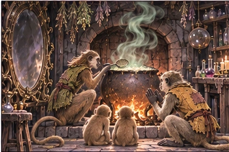
술집을 나온 파우스트와 메피스토펠레스가 마녀의 부엌에 들어섰다. 낮은 화덕 위에서는 커다란 솥이 끓고 있었다. 암컷 원숭이가 솥의 거품을 걷어 냈고, 수컷 원숭이와 새끼들은 그 옆에서 몸을 녹였다. 솥에서 올라오는 김 사이로 알 수 없는 모습들이 나타났다 사라졌다.
독일어 원문 · 한국어 번역 펼치기
Auf einem niedrigen Herd steht ein großer Kessel über dem Feuer. In dem
Dampfe, der davon in die Höhe steigt, zeigen sich verschiedene
Gestalten.
Eine Meerkatze sitzt bei dem Kessel und schäumt ihn und sorgt, daß er
nicht
überläuft. Der Meerkater mit den Jungen sitzt darneben und wärmt sich.
Wände und Decke sind mit dem seltsamsten Hexenhausrat geschmückt.
Faust. Mephistopheles.
FAUST.
Mir widersteht das tolle Zauberwesen!
Versprichst du mir, ich soll genesen
In diesem Wust von Raserei?
Verlang ich Rat von einem alten Weibe?
Und schafft die Sudelköcherei
Wohl dreißig Jahre mir vom Leibe?
Weh mir, wenn du nichts Bessers weißt!
Schon ist die Hoffnung mir verschwunden.
Hat die Natur und hat ein edler Geist
Nicht irgendeinen Balsam ausgefunden?
낮은 화덕의 불 위에 커다란 솥이 놓여 있다. 솟아오르는 김 속에 여러 모습이 나타난다.
암컷 원숭이가 솥 곁에 앉아 거품을 걷어 내고 넘치지 않게 살핀다. 수컷 원숭이는 새끼들과 그 옆에서 몸을 녹인다. 벽과 천장에는 아주 기묘한 마녀의 살림 도구들이 걸려 있다.
파우스트와 메피스토펠레스.
파우스트
이 미친 마법 놀음은 정말 역겹군!
자네는 이 광기 어린 난장판에서 내가 나아질 거라고 약속하는 건가?
늙은 여자에게 조언을 구하라고?
이 지저분한 요리로 내 나이를 서른 해나 덜어 낼 수 있겠나?
이보다 나은 방법을 모른다면 큰일이군!
벌써 희망이 사라졌네.
자연이나 고귀한 정신이 어떤 치료제도 찾아내지 못했단 말인가?
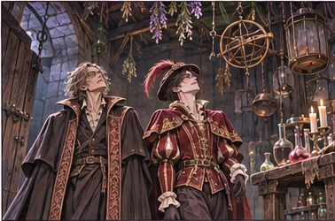
벽과 천장에는 쓰임을 짐작하기 어려운 도구들이 빼곡했다. 이곳은 마녀가 약을 만드는 부엌이었다. 젊음을 되찾게 해 주겠다던 메피스토펠레스가 데려온 곳이 하필 여기라니, 파우스트는 들어오자마자 얼굴을 찌푸렸다.
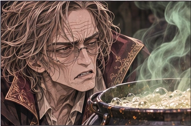
파우스트는 이렇게 어수선한 곳에서 몸이 나아질 수 있겠느냐고 따졌다. 자신이 바라는 것은 잃어버린 세월을 되돌려 젊어지는 일이었다. 그런데 눈앞에는 끓는 솥과 기묘한 도구들뿐이었다. 그는 서른 해나 젊어질 수 있다는 말을 쉽게 믿지 못했다.
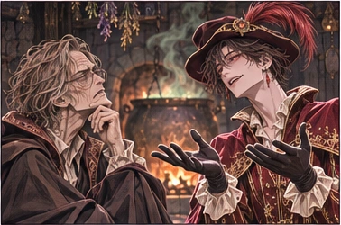
파우스트는 마법 말고 자연이나 학문이 찾아낸 방법은 없느냐고 물었다. 메피스토펠레스는 그런 방법도 있다고 답했다. 다만 전혀 다른 방식으로 살아야 한다며 말을 뜸 들였다. 파우스트가 그 말을 듣고 싶어 하는 것을 알았다.
독일어 원문 · 한국어 번역 펼치기
MEPHISTOPHELES.
Mein Freund, nun sprichst du wieder klug!
Dich zu verjüngen, gibt’s auch ein natürlich Mittel;
Allein es steht in einem andern Buch,
Und ist ein wunderlich Kapitel.
FAUST.
Ich will es wissen.
MEPHISTOPHELES.
Gut! Ein Mittel, ohne Geld
Und Arzt und Zauberei zu haben.
Begib dich gleich hinaus aufs Feld,
Fang an zu hacken und zu graben
Erhalte dich und deinen Sinn
In einem ganz beschränkten Kreise,
Ernähre dich mit ungemischter Speise,
Leb mit dem Vieh als Vieh, und acht es nicht für Raub,
Den Acker, den du erntest, selbst zu düngen;
Das ist das beste Mittel, glaub,
Auf achtzig Jahr dich zu verjüngen!
메피스토펠레스
친구여, 이제 다시 똑똑한 소리를 하는군요!
젊어지는 자연스러운 방법도 있습니다.
다만 다른 책에 실린, 좀 별난 내용이지요.
파우스트
알고 싶네.
메피스토펠레스
좋습니다! 돈도 의사도 마법도 필요 없는 방법입니다.
곧장 들로 나가 괭이질하고 땅을 파십시오.
생활과 생각의 범위를 아주 좁게 두고, 손대지 않은 소박한 음식을 드십시오.
가축과 더불어 가축처럼 살고, 거둬들일 밭에 직접 거름을 주는 일도 꺼리지 마십시오.
믿으세요. 여든 살까지 젊게 사는 가장 좋은 방법입니다!
메피스토펠레스가 내놓은 방법은 들로 나가 땅을 파며 사는 것이었다. 소박하게 먹고 가축과 지내며 몸을 쓰면 오래도록 젊게 살 수 있다는 말이었다. 돈도 마법도 필요 없다고 했지만, 파우스트에게는 익숙한 생활을 모두 바꾸라는 제안이었다. 그는 듣는 동안 점점 내키지 않는 표정이 되었다.
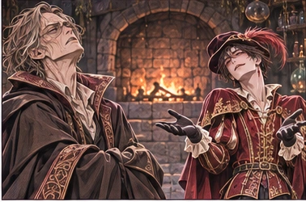
파우스트는 삽을 들고 사는 데 익숙하지도 않고 그런 답답한 생활은 싫다고 했다. 메피스토펠레스는 그렇다면 마녀를 찾아야 한다고 결론지었다. 다른 길을 들려준 뒤 파우스트 스스로 거절하게 한 것이다. 파우스트는 그래도 왜 꼭 그 여자여야 하느냐고 물었다.
독일어 원문 · 한국어 번역 펼치기
FAUST.
Das bin ich nicht gewöhnt, ich kann mich nicht bequemen,
Den Spaten in die Hand zu nehmen.
Das enge Leben steht mir gar nicht an.
MEPHISTOPHELES.
So muß denn doch die Hexe dran.
FAUST.
Warum denn just das alte Weib!
Kannst du den Trank nicht selber brauen?
MEPHISTOPHELES.
Das wär ein schöner Zeitvertreib!
Ich wollt indes wohl tausend Brücken bauen.
Nicht Kunst und Wissenschaft allein,
Geduld will bei dem Werke sein.
Ein stiller Geist ist jahrelang geschäftig,
Die Zeit nur macht die feine Gärung kräftig.
Und alles, was dazu gehört,
Es sind gar wunderbare Sachen!
Der Teufel hat sie’s zwar gelehrt;
Allein der Teufel kann’s nicht machen.
(Die Tiere erblickend.)
Sieh, welch ein zierliches Geschlecht!
Das ist die Magd! das ist der Knecht!
(Zu den Tieren.)
Es scheint, die Frau ist nicht zu Hause?
파우스트
그런 일은 익숙하지 않아. 삽을 손에 쥘 마음도 들지 않네.
그런 답답한 생활은 나에게 맞지 않아.
메피스토펠레스
그렇다면 역시 마녀의 힘을 빌려야겠군요.
파우스트
왜 하필 그 늙은 여자여야 하나!
자네가 직접 약을 끓일 수는 없나?
메피스토펠레스
참 좋은 소일거리겠군요!
그 시간에 저는 다리를 천 개라도 놓겠습니다.
그 일에는 기술과 학문뿐 아니라 참을성도 필요합니다.
차분한 마음으로 여러 해를 들여야 하며, 시간이 지나야 잘 익은 약의 힘이 생깁니다.
들어가는 재료도 아주 기묘한 것들입니다!
악마가 가르쳐 주기는 했지만, 악마 자신은 만들 수 없지요.
(동물들을 보고.)
저 귀여운 식구들 좀 보십시오!
이쪽은 하녀, 저쪽은 하인이군요!
(동물들에게.)
주인아주머니가 집에 안 계신 모양이구나?
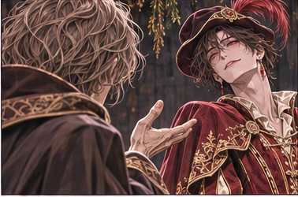
파우스트는 메피스토펠레스가 직접 약을 만들면 되지 않느냐고 했다. 메피스토펠레스는 그 시간에 다리를 천 개라도 놓겠다고 과장했다. 약을 만들려면 아는 것만으로는 부족하고 오랫동안 기다릴 줄도 알아야 한다는 설명이었다. 파우스트는 원하는 일이 모두 악마의 손짓 한 번으로 되는 것은 아니라는 말을 들었다.
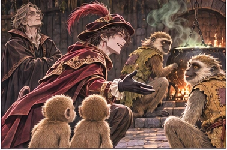
메피스토펠레스는 약이 제힘을 내려면 여러 해 동안 익어야 한다고 말했다. 악마가 만드는 법을 가르쳤어도 악마 자신이 대신할 수는 없다는 것이었다. 설명을 마친 그는 솥 옆의 원숭이들에게 눈을 돌렸다. 파우스트가 못마땅해하는 동안에도 그에게는 이곳의 소란이 재미있었다.
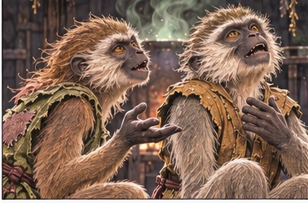
메피스토펠레스는 두 원숭이를 하녀와 하인처럼 부르며 주인이 없느냐고 물었다. 이들은 마녀의 부엌에서 일을 거드는 동물들이었다. 원숭이들은 주인이 잔치에 가느라 굴뚝으로 나갔다고 대답했다. 파우스트는 사람처럼 말을 주고받는 모습까지 낯설었다.
독일어 원문 · 한국어 번역 펼치기
DIE TIERE.
Beim Schmause,
Aus dem Haus
Zum Schornstein hinaus!
MEPHISTOPHELES.
Wie lange pflegt sie wohl zu schwärmen?
DIE TIERE.
So lange wir uns die Pfoten wärmen.
MEPHISTOPHELES. (zu Faust).
Wie findest du die zarten Tiere?
FAUST.
So abgeschmackt, als ich nur jemand sah!
MEPHISTOPHELES.
Nein, ein Discours wie dieser da
Ist grade der, den ich am liebsten führe!
(zu den Tieren.)
So sagt mir doch, verfluchte Puppen,
Was quirlt ihr in dem Brei herum?
DIE TIERE.
Wir kochen breite Bettelsuppen.
MEPHISTOPHELES.
Da habt ihr ein groß Publikum.
동물들
잔치에 갔지요. 집을 나가 굴뚝 밖으로!
메피스토펠레스
보통 얼마나 오래 돌아다니시니?
동물들
우리가 발을 녹이고 있는 동안이지요.
메피스토펠레스가 파우스트에게
이 귀여운 동물들이 어떻습니까?
파우스트
내가 본 것 중 가장 우스꽝스럽군!
메피스토펠레스
아닙니다. 저는 바로 이런 대화가 가장 좋습니다!
(동물들에게.)
자, 이 망할 인형들아. 그 죽을 무엇으로 휘젓고 있니?
동물들
우리는 푸짐한 거지 수프를 끓이고 있어요.
메피스토펠레스
그렇다면 손님이 아주 많겠구나.
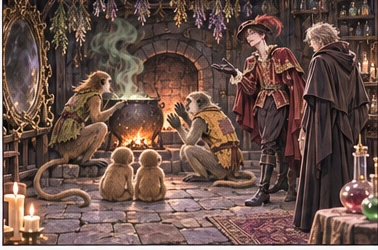
메피스토펠레스가 마녀는 얼마나 오래 돌아다니느냐고 물었다. 원숭이들은 자기들이 발을 녹이고 있는 동안이라고 답했다. 언제 돌아오는지 알 수 있는 대답은 아니었다. 메피스토펠레스는 오히려 그런 대화가 즐거운 듯 파우스트에게 동물들이 어떠냐고 물었다.
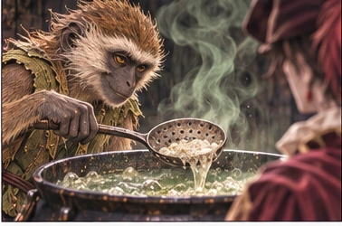
파우스트는 원숭이들이 몹시 우스꽝스럽다고 했다. 메피스토펠레스는 자신은 이런 대화가 가장 좋다며 솥에서는 무엇을 끓이느냐고 물었다. 동물들은 푸짐한 거지 수프를 만든다고 답했다. 엉뚱한 말이 오갈수록 메피스토펠레스는 더 흥미로워했다.
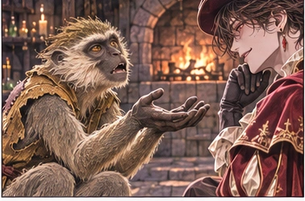
수컷 원숭이가 메피스토펠레스 곁으로 다가와 아양을 부렸다. 주사위 놀이에서 이기게 해 자신을 부자로 만들어 달라는 부탁이었다. 형편이 나쁘니 돈만 생기면 괜찮아질 거라고 했다. 메피스토펠레스는 복권까지 살 수 있으면 얼마나 좋아하겠느냐며 웃었다.
독일어 원문 · 한국어 번역 펼치기
DER KATER (macht sich herbei und schmeichelt dem Mephistopheles).
O würfle nur gleich,
Und mache mich reich,
Und laß mich gewinnen!
Gar schlecht ist’s bestellt,
Und wär ich bei Geld,
So wär ich bei Sinnen.
MEPHISTOPHELES.
Wie glücklich würde sich der Affe schätzen,
Könnt er nur auch ins Lotto setzen!
(Indessen haben die jungen Meerkätzchen mit einer großen Kugel gespielt
und
rollen sie hervor.)
DER KATER.
Das ist die Welt;
Sie steigt und fällt
Und rollt beständig;
Sie klingt wie Glas;
Wie bald bricht das!
Ist hohl inwendig.
Hier glänzt sie sehr,
Und hier noch mehr.
“Ich bin lebendig!”
Mein lieber Sohn,
Halt dich davon!
Du mußt sterben!
Sie ist von Ton,
Es gibt Scherben.
수컷 원숭이가 다가와 메피스토펠레스에게 아양을 부린다.
어서 주사위를 던져 나를 부자로 만들어 주세요. 내가 이기게 해 주세요!
형편이 아주 나빠요. 돈만 있다면 정신도 멀쩡해질 텐데.
메피스토펠레스
복권까지 살 수 있다면 이 원숭이는 얼마나 행복하다고 생각할까!
(그동안 커다란 공을 가지고 놀던 새끼 원숭이들이 그것을 굴려 온다.)
수컷 원숭이
이것은 세상이야. 올라가고 내려가며 쉬지 않고 구르지.
유리처럼 소리가 나니 얼마나 쉽게 깨지겠어! 속은 비었지.
여기도 빛나고 저기는 더 빛나네.
“나는 살아 있다!”
사랑하는 아들아, 가까이하지 마라!
너는 죽을 수 있어!
이건 진흙으로 만들었으니 깨지면 조각이 생긴단다.
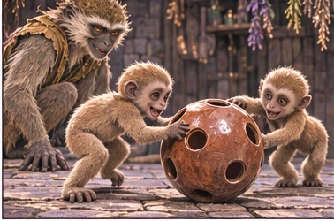
그사이 새끼 원숭이들이 커다란 공을 굴려 왔다. 수컷 원숭이는 그것을 세상이라고 부르며 올라가고 내려가고 쉬지 않고 구른다고 말했다. 반짝이는 공은 유리 같은 소리를 냈지만 속은 비어 있었다. 그는 장난감을 두고 세상 이야기를 늘어놓았다.
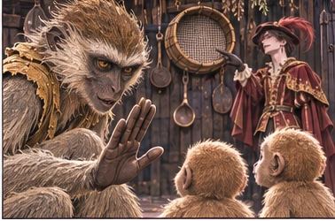
수컷 원숭이는 새끼에게 공을 가까이하지 말라고 경고했다. 진흙으로 만든 것이라 깨지면 조각이 생긴다는 말이었다. 세상이라고 부르다가 금세 깨지기 쉬운 장난감처럼 다루는 모습이 우스웠다. 메피스토펠레스는 이번에는 걸려 있는 체가 무엇에 쓰는 물건인지 물었다.
독일어 원문 · 한국어 번역 펼치기
MEPHISTOPHELES.
Was soll das Sieb?
DER KATER (holt es herunter).
Wärst du ein Dieb,
Wollt ich dich gleich erkennen.
(Er lauft zur Kätzin und läßt sie durchsehen.)
Sieh durch das Sieb!
Erkennst du den Dieb,
Und darfst ihn nicht nennen?
MEPHISTOPHELES (sich dem Feuer nähernd).
Und dieser Topf?
KATER UND KÄTZIN.
Der alberne Tropf!
Er kennt nicht den Topf,
Er kennt nicht den Kessel!
MEPHISTOPHELES.
Unhöfliches Tier!
DER KATER.
Den Wedel nimm hier,
Und setz dich in Sessel!
(Er nötigt den Mephistopheles zu sitzen.)
메피스토펠레스
그 체는 무엇에 쓰는 거니?
수컷 원숭이가 체를 내려 가져온다.
당신이 도둑이라면 당장 알아볼 수 있지요.
(암컷 원숭이에게 달려가 체 너머를 보게 한다.)
체 너머를 봐!
도둑이 누군지 알겠는데도 이름은 말하지 못하겠니?
메피스토펠레스가 불 가까이 가며
이 냄비는?
수컷과 암컷 원숭이
이 바보 같은 양반!
냄비도 모르고 솥도 모르네!
메피스토펠레스
무례한 동물이구나!
수컷 원숭이
이 털이개를 들고 의자에 앉으세요!
(메피스토펠레스를 억지로 앉힌다.)
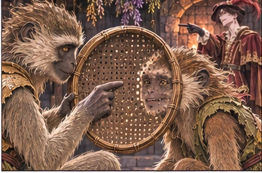
수컷 원숭이가 체를 내려 들고 암컷 원숭이에게 달려갔다. 체는 작은 구멍 사이로 가루 같은 것을 거르는 도구였다. 그는 이것으로 도둑을 알아볼 수 있다며 체 너머를 보게 했다. 메피스토펠레스는 그 엉뚱한 장난을 보다가 불 가까이에 놓인 냄비도 가리켰다.
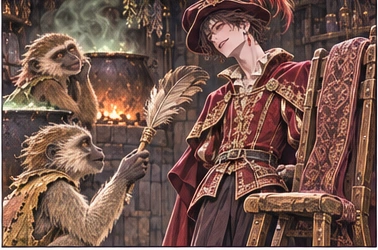
두 원숭이가 냄비도 모르느냐며 메피스토펠레스를 놀렸다. 그가 무례하다고 하자 수컷 원숭이는 털이개를 건네며 의자에 앉으라고 했다. 손님을 떠받드는 것인지 놀리는 것인지 분간하기 어려운 태도였다. 메피스토펠레스는 그런 버릇없는 대접도 재미있게 받아 주었다.
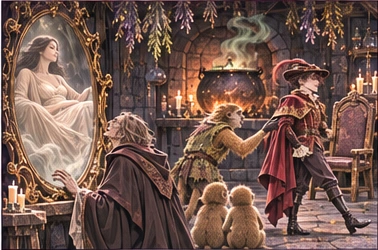
원숭이들이 메피스토펠레스를 의자로 이끄는 동안, 파우스트는 커다란 거울 앞에 멈춰 서 있었다. 거울에는 아름다운 여인의 모습이 나타났다. 가까이 다가가면 흐려지고, 조금 물러나야 다시 또렷해졌다. 그는 가장 잘 보이는 자리를 떠나지 못했다.
독일어 원문 · 한국어 번역 펼치기
FAUST (welcher diese Zeit über vor einem Spiegel gestanden, sich ihm
bald genähert, bald sich von ihm entfernt hat).
Was seh ich? Welch ein himmlisch Bild
Zeigt sich in diesem Zauberspiegel!
O Liebe, leihe mir den schnellsten deiner Flügel,
Und führe mich in ihr Gefild!
Ach wenn ich nicht auf dieser Stelle bleibe,
Wenn ich es wage, nah zu gehn,
Kann ich sie nur als wie im Nebel sehn!—
Das schönste Bild von einem Weibe!
Ist’s möglich, ist das Weib so schön?
Muß ich an diesem hingestreckten Leibe
Den Inbegriff von allen Himmeln sehn?
So etwas findet sich auf Erden?
파우스트는 그동안 거울 앞에 서서 가까이 갔다가 멀어졌다가 했다.
무엇이 보이는 거지? 이 마법 거울에 얼마나 천상 같은 모습이 나타나는가!
사랑이여, 가장 빠른 날개를 빌려 나를 저 여인이 있는 곳으로 데려가 다오!
아, 이 자리를 떠나 가까이 가려고 하면 안개 속에 있는 것처럼만 보이는구나!
이토록 아름다운 여인의 모습이라니!
여자가 정말 저렇게 아름다울 수 있나?
저 누워 있는 몸에서 온 하늘의 아름다움을 모두 보아야 한단 말인가?
저런 사람이 땅 위에도 있단 말인가?
파우스트는 정말 저렇게 아름다운 사람이 있을 수 있느냐고 거듭 물었다. 처음에 부엌을 둘러보며 느꼈던 불쾌함도 잠시 잊었다. 메피스토펠레스는 신이 엿새 동안 공들여 세상을 만들었으니 훌륭한 것이 나와야 한다며 농담했다. 파우스트는 그 말보다 거울 속 모습에 더 집중했다.
독일어 원문 · 한국어 번역 펼치기
MEPHISTOPHELES.
Natürlich, wenn ein Gott sich erst sechs Tage plagt,
Und selbst am Ende Bravo sagt,
Da muß es was Gescheites werden.
Für diesmal sieh dich immer satt;
Ich weiß dir so ein Schätzchen auszuspüren,
Und selig, wer das gute Schicksal hat,
Als Bräutigam sie heim zu führen!
(Faust sieht immerfort in den Spiegel. Mephistopheles, sich in dem
Sessel
dehnend und mit dem Wedel spielend, fährt fort zu sprechen.)
Hier sitz ich wie der König auf dem Throne,
Den Zepter halt ich hier, es fehlt nur noch die Krone.
DIE TIERE (welche bisher allerlei wunderliche Bewegungen durcheinander
gemacht haben, bringen dem Mephistopheles eine Krone mit großem
Geschrei).
O sei doch so gut,
Mit Schweiß und mit Blut
Die Krone zu leimen!
(Sie gehn ungeschickt mit der Krone um und zerbrechen sie in zwei
Stücke,
mit welchen sie herumspringen.)
Nun ist es geschehn!
Wir reden und sehn,
Wir hören und reimen.
FAUST (gegen den Spiegel).
Weh mir! ich werde schier verrückt.
MEPHISTOPHELES (auf die Tiere deutend).
Nun fängt mir an fast selbst der Kopf zu schwanken.
DIE TIERE.
Und wenn es uns glückt,
Und wenn es sich schickt,
So sind es Gedanken!
FAUST (wie oben).
Mein Busen fängt mir an zu brennen!
Entfernen wir uns nur geschwind!
MEPHISTOPHELES (in obiger Stellung).
Nun, wenigstens muß man bekennen,
Daß es aufrichtige Poeten sind.
메피스토펠레스
물론이지요. 신이 엿새 동안 애쓴 뒤 끝에 스스로 잘했다고 외쳤다면 훌륭한 것이 나와야 하지 않겠습니까.
이번에는 실컷 보십시오. 저런 연인을 찾아 드릴 수 있습니다.
신랑이 되어 그녀를 집으로 데려갈 행운을 얻는 이는 행복하겠지요!
(파우스트는 계속 거울을 들여다본다. 메피스토펠레스는 의자에 몸을 뻗고 털이개를 가지고 놀며 말을 잇는다.)
여기 앉으니 왕좌에 오른 왕 같군.
왕의 지팡이도 들었으니 이제 왕관만 있으면 되겠어.
동물들은 그동안 기묘한 몸짓으로 뒤섞여 움직이다가 큰 소리를 지르며 왕관을 가져온다.
부디 땀과 피를 들여 이 왕관을 붙여 주세요!
(서툴게 다루다가 왕관을 두 조각으로 깨뜨리고, 조각들을 들고 뛰어다닌다.)
이제 일이 벌어졌네!
우리는 말하고 보고, 듣고 운을 맞추지요.
파우스트가 거울을 향해
아, 거의 미칠 것 같아.
메피스토펠레스가 동물들을 가리키며
나까지 머리가 어지러워지기 시작하는군.
동물들
운이 좋고 잘 들어맞으면 그것이 생각이 되지요!
파우스트가 앞서처럼
가슴이 타오르기 시작하네!
어서 이곳을 떠나세!
메피스토펠레스가 그대로 앉아
적어도 솔직한 시인들이라는 점은 인정해야겠군요.
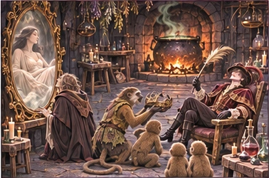
메피스토펠레스는 저런 연인을 찾아 줄 수 있다며 실컷 보라고 했다. 파우스트가 그대로 거울을 바라보자 그는 의자에 몸을 뻗었다. 털이개를 왕의 지팡이처럼 들고 왕관만 있으면 되겠다고 했다. 원숭이들은 그 말에 맞춰 왕관을 가져왔지만, 서툴게 다루다가 둘로 깨뜨렸다.
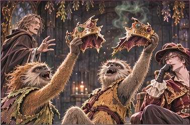
원숭이들은 깨진 왕관 조각을 들고 뛰어다니며 말과 운을 맞췄다. 파우스트는 거울 앞에서 거의 미칠 것 같다고 중얼거렸다. 아무리 들여다보아도 여인에게 다가갈 수 없었기 때문이다. 메피스토펠레스는 동물들을 가리키며 자신도 어지러워진다고 농담했다.
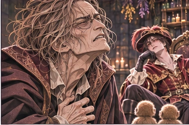
원숭이들은 말이 잘 맞아떨어지면 생각이 된다는 식으로 떠들었다. 파우스트는 가슴이 타는 듯하다며 빨리 떠나자고 했다. 거울을 더 보고 싶으면서도 이대로 보고만 있기는 견디기 어려웠다. 메피스토펠레스는 원숭이들이 솔직한 시인들이라며 끝까지 장난을 이어 갔다.
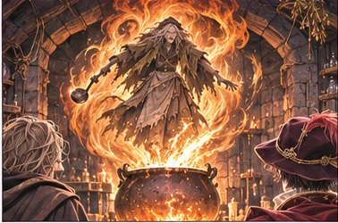
소란이 이어지는 동안 암컷 원숭이가 솥을 돌보는 일을 놓쳤다. 끓던 내용물이 넘치더니 큰 불꽃이 굴뚝 위로 치솟았다. 곧 그 불길을 뚫고 마녀가 비명을 지르며 내려왔다. 부엌의 주인이 돌아오자 원숭이들의 장난이 뚝 멎었다.
독일어 원문 · 한국어 번역 펼치기
(Der Kessel, welchen die Katzin bisher außer acht gelassen, fängt an
überzulaufen, es entsteht eine große Flamme, welche zum Schornstein
hinaus
schlägt. Die Hexe kommt durch die Flamme mit entsetzlichem Geschrei
herunter gefahren.)
DIE HEXE.
Au! Au! Au! Au!
Verdammtes Tier! verfluchte Sau!
Versäumst den Kessel, versengst die Frau!
Verfluchtes Tier!
(Faust und Mephistopheles erblickend.)
Was ist das hier?
Wer seid ihr hier?
Was wollt ihr da?
Wer schlich sich ein?
Die Feuerpein
Euch ins Gebein!
(Sie fahrt mit dem Schaumlöffel in den Kessel und spritzt Flammen nach
Faust, Mephistopheles und den Tieren. Die Tiere winseln.)
암컷 원숭이가 돌보지 않은 솥이 넘치기 시작한다. 커다란 불꽃이 일어나 굴뚝 밖으로 치솟는다. 마녀가 끔찍한 비명을 지르며 그 불꽃을 뚫고 내려온다.
마녀
아이고! 아이고! 아이고! 아이고!
망할 짐승! 저주받을 돼지 같은 것!
솥을 내버려 둬서 주인 몸을 그슬려 놓는구나!
망할 짐승!
(파우스트와 메피스토펠레스를 보고.)
이게 무슨 일이야?
너희는 누구냐?
무엇을 하러 왔지?
누가 몰래 들어왔어?
불의 고통이 너희 뼛속까지 파고들어라!
(거품 걷는 국자를 솥에 넣고 파우스트, 메피스토펠레스, 동물들에게 불꽃을 튀긴다. 동물들이 낑낑거린다.)
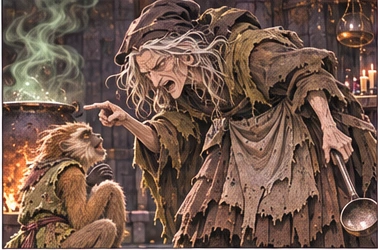
마녀는 솥을 내버려 둬 자신을 그슬리게 했다며 암컷 원숭이를 호되게 꾸짖었다. 구부정한 몸에 낡은 겹옷을 걸친 노파는 이 부엌에서 약을 만드는 주인이었다. 돌아오자마자 불길과 소란을 만났으니 몹시 성이 나 있었다. 원숭이들은 조금 전의 기세를 잃고 움츠러들었다.
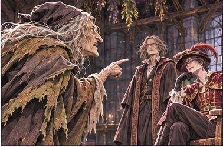
그제야 마녀는 부엌 안의 두 남자를 보았다. 누구이며 무슨 일로 몰래 들어왔느냐고 다그쳤다. 붉은 옷을 입은 손님이 누구인지 아직 알아보지 못한 것이다. 파우스트는 마녀가 다가오자 더욱 이곳을 떠나고 싶어졌다.
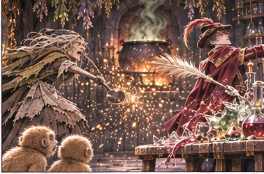
마녀가 국자로 솥을 휘젓고 두 손님과 동물들에게 불꽃을 튀겼다. 원숭이들이 겁먹은 소리를 냈다. 메피스토펠레스는 털이개를 거꾸로 쥐더니 유리병과 냄비 사이를 내리쳤다. 파우스트가 질색하던 부엌은 깨지는 소리로 더 시끄러워졌다.
독일어 원문 · 한국어 번역 펼치기
MEPHISTOPHELES (welcher den Wedel, den er in der Hand hält, umkehrt und
unter die Gläser und Töpfe schlägt).
Entzwei! entzwei!
Da liegt der Brei!
Da liegt das Glas!
Es ist nur Spaß,
Der Takt, du Aas,
Zu deiner Melodei.
(Indem die Hexe voll Grimm und Entsetzen zurücktritt.)
Erkennst du mich? Gerippe! Scheusal du!
Erkennst du deinen Herrn und Meister?
Was hält mich ab, so schlag ich zu,
Zerschmettre dich und deine Katzengeister!
Hast du vorm roten Wams nicht mehr Respekt?
Kannst du die Hahnenfeder nicht erkennen?
Hab ich dies Angesicht versteckt?
Soll ich mich etwa selber nennen?
메피스토펠레스는 손에 든 털이개를 거꾸로 쥐고 유리병과 냄비들을 때린다.
깨져라! 깨져라!
죽은 저기 쏟아지고 유리는 저기 흩어졌네!
그저 장난이야. 네 가락에 맞춰 박자를 넣는 거지, 이 고약한 것아.
(마녀가 분노와 두려움에 물러서는 동안.)
나를 알아보겠느냐? 뼈다귀 같은 괴물아!
네 주인과 스승을 알아보겠어?
뭘 망설이겠어? 너와 네 원숭이 정령들을 두들겨 부술 수도 있어!
붉은 옷이 이제는 두렵지도 않으냐?
수탉 깃털을 알아보지 못하겠어?
내가 이 얼굴을 가렸느냐?
내 이름까지 직접 말해야겠어?
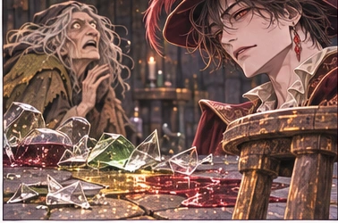
메피스토펠레스는 유리가 깨지고 죽이 쏟아지는 것을 두고 그저 장난이라고 했다. 마녀의 노래에 박자를 넣는다는 빈정거림이었다. 그러다 마녀를 똑바로 보며 자신을 알아보겠느냐고 물었다. 마녀는 화가 나면서도 그의 태도에 놀라 한 걸음 물러섰다.
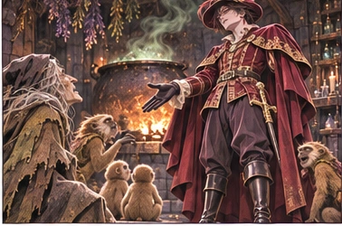
메피스토펠레스는 자신이 네 주인이자 스승 아니냐며 목소리를 높였다. 마녀와 동물들을 부숴 버릴 수 있다고 위협하기까지 했다. 붉은 옷을 보고도 존중할 줄 모르느냐는 말에 마녀의 표정이 바뀌었다. 그가 누구인지 짐작하기 시작한 것이다.
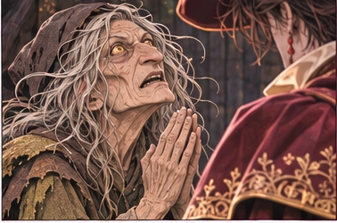
메피스토펠레스는 모자의 수탉 깃털도, 드러낸 얼굴도 못 알아보느냐고 몰아붙였다. 마녀는 마침내 자신이 누구에게 불꽃을 뿌렸는지 깨달았다. 곧장 거친 인사를 용서해 달라고 빌었다. 조금 전 손님들을 쫓아내려던 태도는 사라졌다.
독일어 원문 · 한국어 번역 펼치기
DIE HEXE.
O Herr, verzeiht den rohen Gruß!
Seh ich doch keinen Pferdefuß.
Wo sind denn Eure beiden Raben?
MEPHISTOPHELES.
Für diesmal kommst du so davon;
Denn freilich ist es eine Weile schon,
Daß wir uns nicht gesehen haben.
Auch die Kultur, die alle Welt beleckt,
Hat auf den Teufel sich erstreckt;
Das nordische Phantom ist nun nicht mehr zu schauen;
Wo siehst du Hörner, Schweif und Klauen?
Und was den Fuß betrifft, den ich nicht missen kann,
Der würde mir bei Leuten schaden;
Darum bedien ich mich, wie mancher junge Mann,
Seit vielen Jahren falscher Waden.
DIE HEXE (tanzend).
Sinn und Verstand verlier ich schier,
Seh ich den Junker Satan wieder hier!
MEPHISTOPHELES.
Den Namen, Weib, verbitt ich mir!
DIE HEXE.
Warum? Was hat er Euch getan?
마녀
주인님, 거친 인사를 용서해 주세요!
말발굽이 보이지 않아서 그랬어요.
까마귀 두 마리는 어디 있나요?
메피스토펠레스
이번에는 넘어가 주지.
우리가 못 본 지 꽤 오래되기는 했으니까.
온 세상을 핥고 다니는 문명이 악마에게까지 미쳤단다.
옛 북쪽의 괴물 같은 모습은 이제 볼 수 없지.
뿔이나 꼬리, 발톱이 어디 보이니?
없앨 수 없는 그 발은 사람들 사이에서 곤란하겠지.
그래서 여러 젊은 남자들처럼 나도 오래전부터 가짜 종아리를 쓰고 있단다.
마녀가 춤추며
귀공자 사탄님을 여기서 다시 뵈니 정신을 잃을 것 같아요!
메피스토펠레스
이봐, 그 이름은 부르지 마라!
마녀
왜요? 그 이름이 무슨 잘못을 했나요?
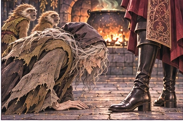
마녀는 말발굽도 보이지 않고 까마귀 두 마리도 없어 알아보지 못했다고 했다. 메피스토펠레스는 오래 못 만났으니 이번에는 넘어가 주겠다고 답했다. 세상이 바뀌는 동안 악마의 차림도 바뀌었다는 설명이었다. 옛이야기에 나오는 뿔과 꼬리, 발톱을 더는 드러내지 않는다고 했다.
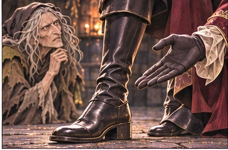
메피스토펠레스는 없앨 수 없는 발도 가짜 종아리로 가린다고 했다. 사람들 사이에서 정체를 숨기기 위한 차림이었다. 마녀는 반가움에 춤추며 사탄이라는 이름을 불렀다. 그는 즉시 그 이름은 부르지 말라고 막았다.
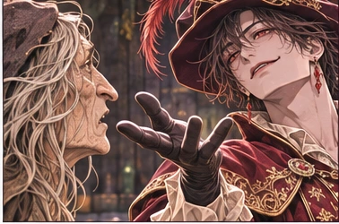
마녀가 왜 그 이름을 싫어하느냐고 묻자, 그는 사람들은 악마를 옛이야기 속으로 밀어냈어도 악한 짓은 여전히 한다고 말했다. 자신은 다른 신사들처럼 보이고 싶으니 남작님이라고 부르라고 했다. 남작은 귀족에게 붙이는 칭호였다. 그는 귀족의 가문 표시를 보여 주는 척하며 장난을 쳤다.
독일어 원문 · 한국어 번역 펼치기
MEPHISTOPHELES.
Er ist schon lang ins Fabelbuch geschrieben;
Allein die Menschen sind nichts besser dran,
Den Bösen sind sie los, die Bösen sind geblieben.
Du nennst mich Herr Baron, so ist die Sache gut;
Ich bin ein Kavalier, wie andre Kavaliere.
Du zweifelst nicht an meinem edlen Blut;
Sieh her, das ist das Wappen, das ich führe!
(Er macht eine unanständige Gebärde.)
DIE HEXE (lacht unmäßig).
Ha! Ha! Das ist in Eurer Art!
Ihr seid ein Schelm, wie Ihr nur immer wart!
MEPHISTOPHELES (zu Faust).
Mein Freund, das lerne wohl verstehn!
Dies ist die Art, mit Hexen umzugehn.
메피스토펠레스
그 이름은 오래전에 우화책에 실렸지.
그렇다고 사람들이 나아진 것은 아니야.
악마는 없앴어도 악한 자들은 그대로 남았거든.
나를 남작님이라고 부르면 돼.
나는 다른 신사들과 같은 신사야.
내가 귀족 집안 출신이라는 데 의심은 없겠지.
자, 내가 쓰는 가문의 문장을 보아라!
(상스러운 몸짓을 한다.)
마녀가 마구 웃는다.
하! 하! 주인님다운 장난이에요!
여전히 짓궂으시군요!
메피스토펠레스가 파우스트에게
친구여, 잘 알아 두십시오!
마녀를 대하는 법은 이렇습니다.
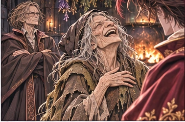
메피스토펠레스가 상스러운 몸짓을 하자 마녀는 큰 소리로 웃었다. 여전히 짓궂다는 반응이었다. 자신을 위협하던 손님이 익숙한 주인임을 알아본 뒤로 긴장이 풀린 것이다. 파우스트는 두 사람의 거친 농담을 곁에서 지켜보았다.
독일어 원문 · 한국어 번역 펼치기
DIE HEXE.
Nun sagt, ihr Herren, was ihr schafft.
MEPHISTOPHELES.
Ein gutes Glas von dem bekannten Saft!
Doch muß ich Euch ums ältste bitten;
Die Jahre doppeln seine Kraft.
DIE HEXE.
Gar gern! Hier hab ich eine Flasche,
Aus der ich selbst zuweilen nasche,
Die auch nicht mehr im mindsten stinkt;
Ich will euch gern ein Gläschen geben.
(Leise.)
Doch wenn es dieser Mann unvorbereitet trinkt
So kann er, wißt Ihr wohl, nicht eine Stunde leben.
MEPHISTOPHELES.
Es ist ein guter Freund, dem es gedeihen soll;
Ich gönn ihm gern das Beste deiner Küche.
Zieh deinen Kreis, sprich deine Sprüche,
Und gib ihm eine Tasse voll!
(Die Hexe, mit seltsamen Gebärden, zieht einen Kreis und stellt
wunderbare
Sachen hinein; indessen fangen die Gläser an zu klingen, die Kessel zu
tönen, und machen Musik. Zuletzt bringt sie ein großes Buch, stellt die
Meerkatzen in den Kreis, die ihr zum Pult dienen und die Fackel halten
müssen. Sie winkt Fausten, zu ihr zu treten.)
마녀
자, 두 분은 무슨 일로 오셨나요?
메피스토펠레스
그 잘 알려진 약을 한 잔 주게!
다만 가장 오래된 것으로 부탁하지.
해가 지날수록 힘이 배로 강해지니까.
마녀
기꺼이요! 여기 제가 가끔 맛보는 병이 있어요.
이제 냄새도 전혀 나지 않지요.
기꺼이 한 잔 드릴게요.
(낮게.)
하지만 이 사람이 준비 없이 마시면 한 시간도 살지 못한다는 건 아시겠지요.
메피스토펠레스
그 약이 잘 들어야 할 좋은 친구야.
네 부엌의 가장 좋은 것을 주고 싶어.
원을 그리고 주문을 외운 뒤 한 잔 가득 주게!
(마녀는 기묘한 몸짓으로 원을 그리고 신기한 물건들을 그 안에 놓는다. 그동안 유리병과 솥이 소리를 내어 음악을 이룬다. 마녀는 마지막으로 커다란 책을 가져오고, 원숭이들을 원 안에 세워 책 받침이 되고 횃불을 들게 한다. 파우스트에게 오라고 손짓한다.)
독일어 원문 · 한국어 번역 펼치기
FAUST (zu Mephistopheles).
Nein, sage mir, was soll das werden?
Das tolle Zeug, die rasenden Gebärden,
Der abgeschmackteste Betrug,
Sind mir bekannt, verhaßt genug.
MEPHISTOPHELES.
Ei Possen! Das ist nur zum Lachen;
Sei nur nicht ein so strenger Mann!
Sie muß als Arzt ein Hokuspokus machen,
Damit der Saft dir wohl gedeihen kann.
(Er nötigt Fausten, in den Kreis zu treten.)
파우스트가 메피스토펠레스에게
아니, 말해 보게. 이게 무슨 일이 되려는 건가?
저 미친 물건들과 몸짓, 터무니없는 속임수는 충분히 알고 있으며 정말 싫다네.
메피스토펠레스
아이, 장난일 뿐입니다! 웃어넘길 일이지요.
그렇게 엄격하게 굴지 마십시오!
약이 잘 듣도록 의사 노릇을 하며 요란한 주문을 좀 외워야 하는 겁니다.
(파우스트를 원 안으로 억지로 들어가게 한다.)
독일어 원문 · 한국어 번역 펼치기
DIE HEXE (mit großer Emphase fängt an, aus dem Buche zu deklamieren).
Du mußt verstehn!
Aus Eins mach Zehn,
Und Zwei laß gehn,
Und Drei mach gleich,
So bist du reich.
Verlier die Vier!
Aus Fünf und Sechs,
So sagt die Hex,
Mach Sieben und Acht,
So ist’s vollbracht.
Und Neun ist Eins,
Und Zehn ist keins.
Das ist das Hexen-Einmaleins!
마녀가 힘을 잔뜩 주어 책을 읽기 시작한다.
알아들어야 한다!
하나를 열로 만들고, 둘은 보내 버리고,
셋을 같게 만들면 부자가 되리라.
넷은 잃어라!
마녀가 말하노니, 다섯과 여섯을 일곱과 여덟로 만들어라.
그러면 이루어진다.
아홉은 하나이고 열은 아무것도 아니다.
이것이 마녀의 구구단이다!
독일어 원문 · 한국어 번역 펼치기
FAUST.
Mich dünkt, die Alte spricht im Fieber.
MEPHISTOPHELES.
Das ist noch lange nicht vorüber,
Ich kenn es wohl, so klingt das ganze Buch;
Ich habe manche Zeit damit verloren,
Denn ein vollkommner Widerspruch
Bleibt gleich geheimnisvoll für Kluge wie für Toren.
Mein Freund, die Kunst ist alt und neu.
Es war die Art zu allen Zeiten,
Durch Drei und Eins, und Eins und Drei
Irrtum statt Wahrheit zu verbreiten.
So schwätzt und lehrt man ungestört;
Wer will sich mit den Narrn befassen?
Gewöhnlich glaubt der Mensch, wenn er nur Worte hört,
Es müsse sich dabei doch auch was denken lassen.
파우스트
노파가 열병에 걸려 헛소리하는 것 같네.
메피스토펠레스
아직 한참 멀었습니다. 그 책은 처음부터 끝까지 저런 식이지요.
저도 그것 때문에 시간을 꽤 낭비했습니다.
완전히 앞뒤가 맞지 않는 말은 똑똑한 사람에게나 어리석은 사람에게나 똑같이 신비롭게 남거든요.
친구여, 이 수법은 오래되었으면서도 새롭습니다.
셋과 하나, 하나와 셋을 가지고 진리 대신 잘못된 생각을 퍼뜨리는 일은 언제나 있었지요.
그렇게 아무 방해 없이 떠들고 가르칩니다. 누가 그런 바보들과 상대하려 하겠습니까?
사람은 대개 말이 들리기만 하면 그 안에 무슨 뜻이 있으리라고 믿지요.
독일어 원문 · 한국어 번역 펼치기
DIE HEXE (fährt fort).
Die hohe Kraft
Der Wissenschaft,
Der ganzen Welt verborgen!
Und wer nicht denkt,
Dem wird sie geschenkt,
Er hat sie ohne Sorgen.
FAUST.
Was sagt sie uns für Unsinn vor?
Es wird mir gleich der Kopf zerbrechen.
Mich dünkt, ich hör ein ganzes Chor
Von hunderttausend Narren sprechen.
마녀가 계속한다.
온 세상에 감추어진 학문의 드높은 힘!
생각하지 않는 사람에게는 그것이 선물로 주어지니,
그는 아무 걱정 없이 그것을 얻으리라.
파우스트
우리에게 무슨 헛소리를 하는 건가?
곧 머리가 터지겠네.
십만 명이나 되는 바보들의 합창을 듣는 것 같아.
독일어 원문 · 한국어 번역 펼치기
MEPHISTOPHELES.
Genug, genug, o treffliche Sibylle!
Gib deinen Trank herbei, und fülle
Die Schale rasch bis an den Rand hinan;
Denn meinem Freund wird dieser Trunk nicht schaden.
Er ist ein Mann von vielen Graden,
Der manchen guten Schluck getan.
(Die Hexe, mit vielen Zeremonien, schenkt den Trank in eine Schale,
wie sie Faust an den Mund bringt, entsteht eine leichte Flamme.)
Nur frisch hinunter! Immer zu!
Es wird dir gleich das Herz erfreuen.
Bist mit dem Teufel du und du,
Und willst dich vor der Flamme scheuen?
(Die Hexe löst den Kreis. Faust tritt heraus.)
Nun frisch hinaus! Du darfst nicht ruhn.
메피스토펠레스
충분해, 충분해, 훌륭한 여예언자여!
약을 가져와 그릇 가장자리까지 어서 채우게.
이 친구에게는 그 약이 해가 되지 않을 거야.
학위도 많이 가진 사람이니 좋은 술도 여러 잔 마셔 보았지.
(마녀가 온갖 의식을 치르며 약을 그릇에 따른다. 파우스트의 입에 가져가자 작은 불꽃이 인다.)
어서 삼키십시오! 자, 계속!
곧 마음이 즐거워질 겁니다.
악마와 허물없이 지내면서 불꽃을 무서워하십니까?
(마녀가 원을 풀고 파우스트가 밖으로 나온다.)
이제 어서 나갑시다! 쉬어서는 안 됩니다.
독일어 원문 · 한국어 번역 펼치기
DIE HEXE.
Mög Euch das Schlückchen wohl behagen!
MEPHISTOPHELES (zur Hexe).
Und kann ich dir was zu Gefallen tun,
So darfst du mir’s nur auf Walpurgis sagen.
DIE HEXE.
Hier ist ein Lied! wenn Ihr’s zuweilen singt,
So werdet Ihr besondre Wirkung spüren.
MEPHISTOPHELES (zu Faust).
Komm nur geschwind und laß dich führen;
Du mußt notwendig transpirieren,
Damit die Kraft durch Inn- und Äußres dringt.
Den edlen Müßiggang lehr ich hernach dich schätzen,
Und bald empfindest du mit innigem Ergetzen,
Wie sich Cupido regt und hin und wider springt.
마녀
그 한 모금이 몸에 잘 맞기를 바라요!
메피스토펠레스가 마녀에게
내가 해 줄 일이 있다면 발푸르기스의 밤에 말해 주게.
마녀
여기 노래가 있어요! 가끔 부르시면 특별한 효과를 느끼실 거예요.
메피스토펠레스가 파우스트에게
어서 따라오십시오.
약의 힘이 몸 안팎으로 퍼지려면 꼭 땀을 흘려야 합니다.
고상하게 빈둥거리며 즐기는 법은 나중에 가르쳐 드리지요.
곧 사랑의 신 쿠피도가 안에서 이리저리 뛰노는 것을 큰 기쁨으로 느끼실 겁니다.
독일어 원문 · 한국어 번역 펼치기
FAUST.
Laß mich nur schnell noch in den Spiegel schauen!
Das Frauenbild war gar zu schön!
MEPHISTOPHELES.
Nein! Nein! Du sollst das Muster aller Frauen
Nun bald leibhaftig vor dir sehn.
(Leise.)
Du siehst, mit diesem Trank im Leibe,
Bald Helenen in jedem Weibe.
파우스트
잠깐만 더 거울을 보게 해 주게!
여인의 모습이 너무나 아름다웠네!
메피스토펠레스
안 됩니다! 안 돼요! 곧 모든 여인의 본보기 같은 사람을 직접 보시게 될 겁니다.
(낮게.)
이 약을 몸에 들이면 곧 모든 여자에게서 헬레네가 보일 테니까.